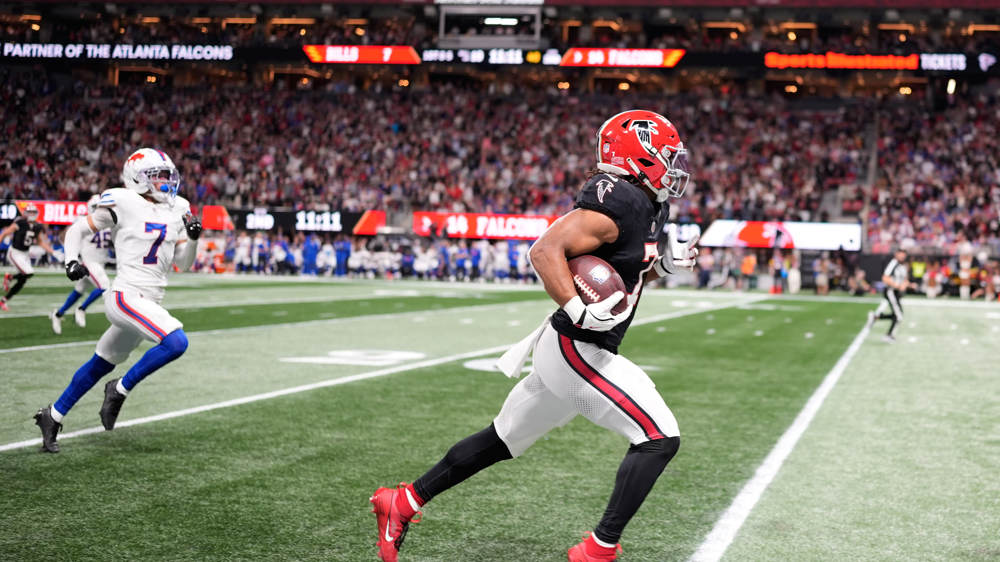
It would be wrong to feature Rico Dowdle here two weeks in a row, so we’ll go with Bijan who was absolutely everywhere in Atlanta’s signature win over Buffalo. He’s averaging 164 scrimmage yards a game. Holy shit.Matchup of the Week Mr. Turna 2-to-uh-4 ( 4-2) vs. Jos Allen’s New Phat Hog (3-3) This is a big one smack dab in the middle of the rankings, and also sports a perfect 50-50 predicted win chance. This could create some space for Andy to stay at the top of the playoff mix, or it could breath new life into Pangy’s oh-so-injured squad.
What to watch: * Andy’s starting Tre Tucker, who was just dropped by Pangy last week. Revenge game? * No Puka - is that the only thing floating Andy’s squad? * Pangy is starting some NFL players - this is a straight up weird lineup: Goff, Barkley (cool), Marks, Bourne, Odunze (looks good), Michael Mayer, and Elic Ayomanor.
Waiver Wire Spice 🌶️ * Kris makes a splash from the high dive board (#1 spot), spending $20 on Vidal, probably solely out of boredom, to put behind JT, Bijan and Etienne. * People are seriously running out of FAAB, it was pretty quiet. The next biggest buy was Pangy on Bourne at $3. * CJ picks up AJ Barner for $1, the greatest Seahawk of all time.
1. Kris (5-1)
PF: 859.8, FAAB: $40, W5 ↔️
Man, can this team be stopped? There’s something to be said about getting so wasted at the draft that you have to be sent home from the casino. Gonna try this one on for size next year.
(He’s also getting Kittle back… thoughts and prayers for us all)
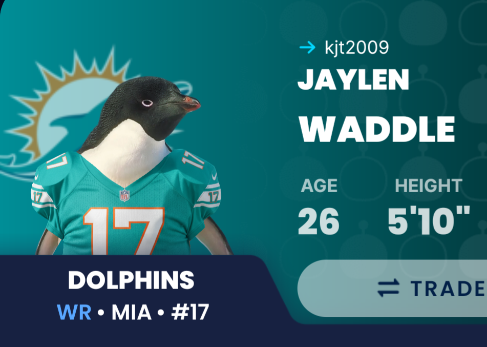
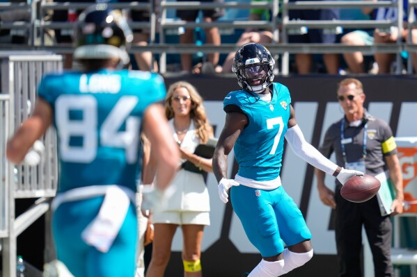
2. Joel (4-2)
PF: 741.26, FAAB: $33, W2 ⬆️
Strange thing here, but explains Joel’s high floor: he currently has the #4 QB, RB, WR and TE. That ain’t bad. Additionally, BTJ had a nice bounce back, which Joel’s been doing fine without so far.
3. Neil (3-3)
PF: 698.26, FAAB: $4, W3 ⬆️⬆️⬆️⬆️
Neil’s a big Drake Maye, and Patriots fan.
Last week I said Tet had seen 8 targets in each game, so naturally he only had 5 this week, but turned in his best week as a pro.
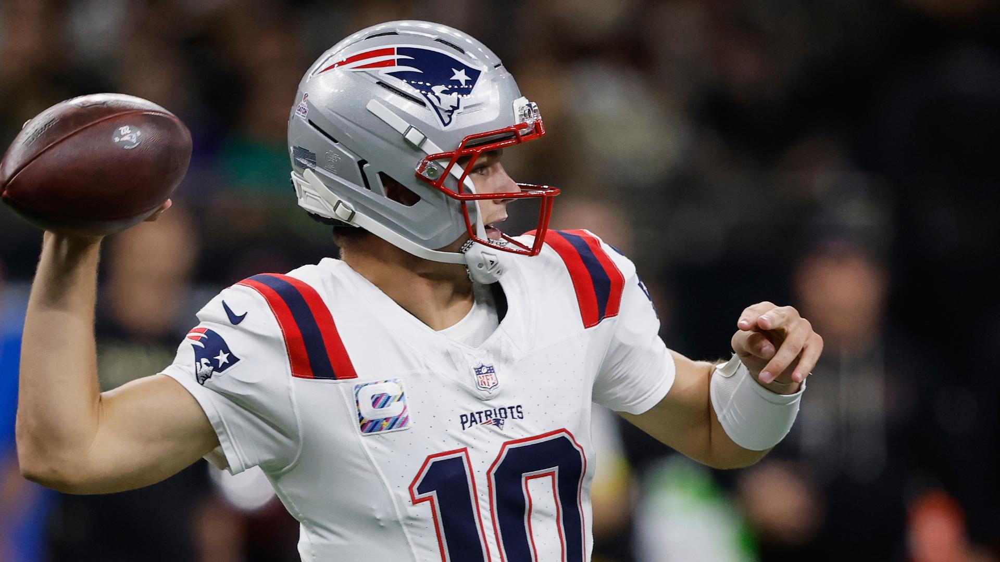
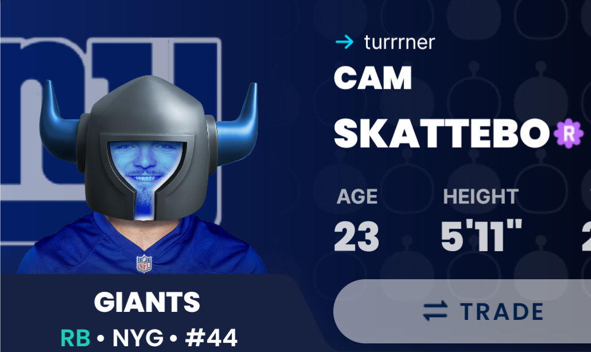
4. Andy (4-2)
PF: 732.48, FAAB: $5, W1 ⬆️
Andy rides Skattebo’s three TNF TDs and Mahomes’ four, to get a W in a week where we lost Puka for at least a bit, and saw some so-so performances. But winning like this is the stuff of champions (ask the Cheeks).
5. Jake (4-2) ⬇️⬇️⬇️
PF: 753.58, FAAB: $65, L1
Lost but 70+ to Kris. Spent a lot of time looking in my reflection in puddles this week. Luckily, I’m off to a HUGE headstart from TNF, where the Steelers D got my -4.
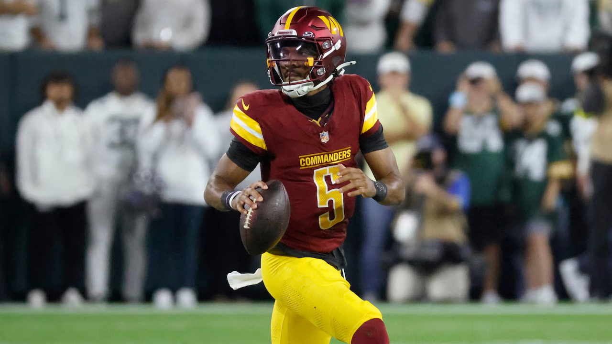
6. Chris (2-4): ⬆️⬆️⬆️⬆️
PF: 633.60, FAAB: $79, W1
2-4, scores 107 and moves up four spots?! Well, things aren’t going great for the rest of the league. Evans may return this week to give a nice boost, and Jayden Daniels gets to play the Cowboys D this week, so CJ’s looking at moving up next week, too.
7. Seifert (2-4) ⬇️
PF: 682.86, FAAB: $30, L1
Last week he scored 61.24, and 24.1 were from CMC.
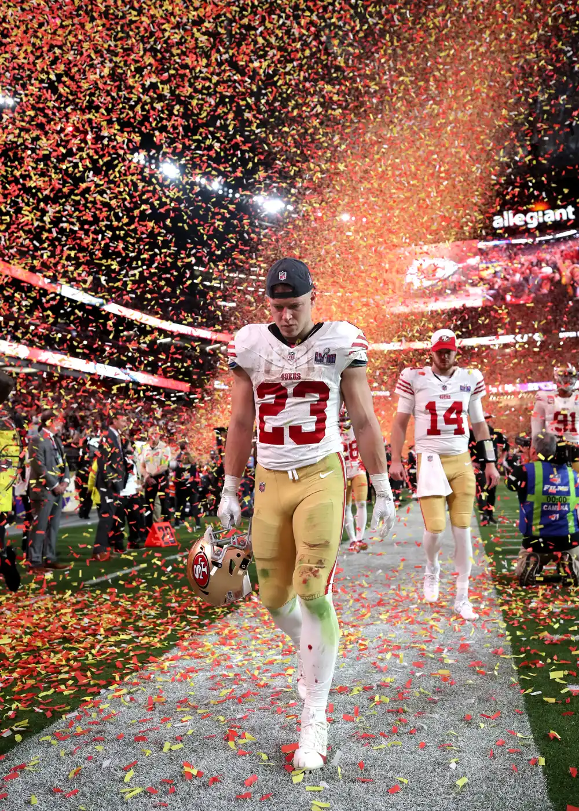
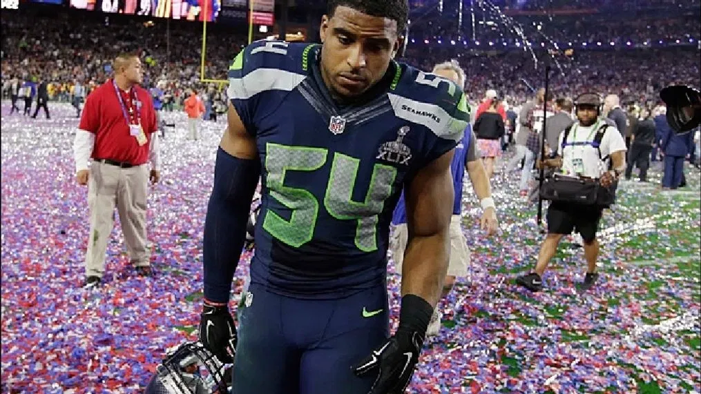
8. Pangy (3-3) ⬇️⬇️⬇️⬇️
PF: 696.28, FAAB: $13, L2
Last week he scored 63.10, and 12 were from Seattle’s D.
9. PJ (2-4) ⬇️
PF: 576.56, FAAB: $27, L4
At the time of the writing of this article, PJ is currently set to start both Carolina RBs. Bold strategy, Cotton… but speaking of Cotton - it’s time for CADE OTTON. Bucs could be short handed, and PJ rode Otton last year (I think), could it pay off again?
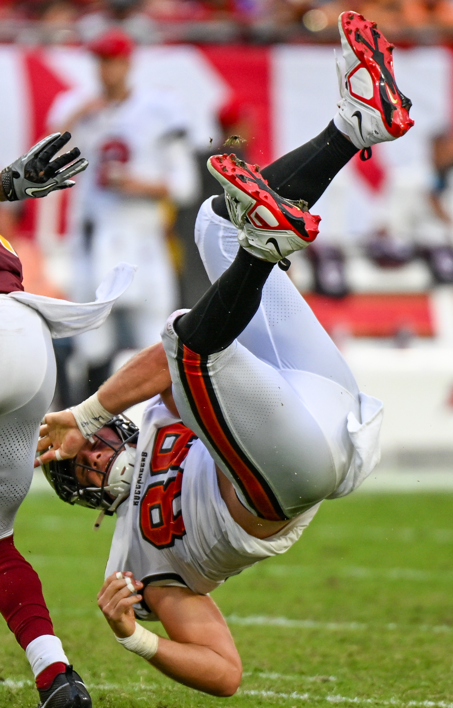
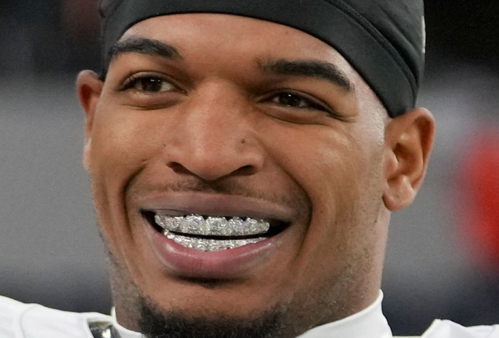
10. Tony (1-5) ⬇️
PF: 542.60, FAAB: $81, L5
You can’t take FAAB with you. If only Tony could take a bye like his Ravens… Both are 1-5 and gotta get everything just right to save their season. (also, it’s pretty crazy that the Ravens are not in last place in the AFC North - thanks Browns!)
Speaking of AFC North rivals - at least Ja’Marr Chase is heating up - must feel great to root for him!
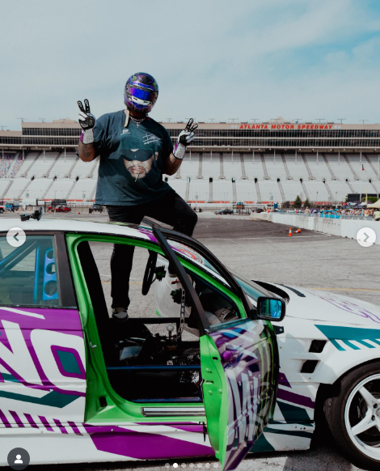
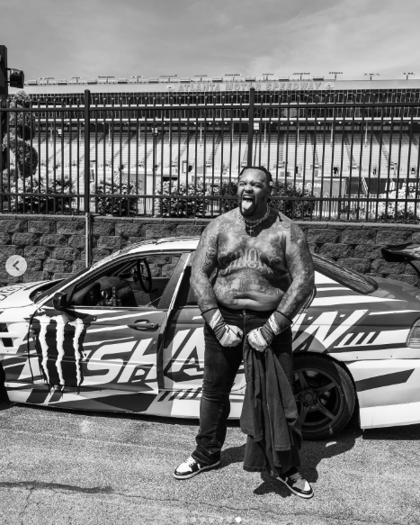
“I wish I had an answer, because I would’ve said it today. But no one knows. We just got to just keep playing hard and keep being us.”
- Dion Dawkins
I love how these weekly quotes are so relatable to fantasy football, lol. - Jake
Good luck to everyone besides CJ! - Jake 💋